Diese Seite ist einzig als archivierte Information gedacht. Hilfreiche Aspekte
dürfen berücksichtigt werden.
|
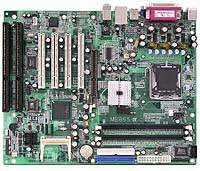
|
MB865
|
- Supports Pentium® 4 / Celeron® D
processors
- Up to 3.8GHz, 533/800MHz FSB
- DDR DIMM x 2, max. 2GB
- Integrated 82865G VGA, shared memory, CRT support
- Integrated 10/100 BaseT and optional Gigabit LAN
- Watchdog timer, Digital I/O, 4x serial
- Type 2 CF socket, 2x SATA, 6x USB
- 4x PCI slot, 2x ISA, 1x AGP
|
|
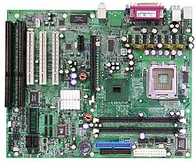
|
MB880
|
- Supports LGA775 Pentium ® 4
- 4 Serial ATA, 6 USB, 4 serial ports, DiskOnChip
- 1 PCI Express x16, 1 PCI Express x1, 3 x PCI, 2 ISA slots
|
|
|
MB800
|
- Supports Intel® Pentium® 4, up to3.06GHz
- Intel® 845G
/ 845GV chipset on board
- Two DDR slots for up to 2GB PC200/266 DDR
- Integrated chipset VGA for CRT interface
- ICH4 integrated 10/100 BaseT Ethernet
- 3x PCI, 3x ISA, 1x MicroPCI, 1x AGP slot (for 845G)
- Four COM ports, watchdog timer, DiskOnChip
- Digital I/O, 4x USB 2.0, PCI to ISA Bridge
|
|
|
MB865
|
- Supports Pentium®
4 / Celeron®
D processors
- Up to 3.8GHz, 533/800MHz FSB
- DDR DIMM x 2, max. 2GB
- Integrated 82865G VGA, shared memory, CRT support
- Integrated 10/100 BaseT and optional Gigabit LAN
- Watchdog timer, Digital I/O, 4x serial
- Type 2 CF socket, 2x SATA, 6x USB
- 4x PCI slot, 2x ISA, 1x AGP
|
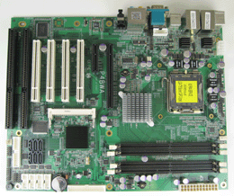
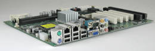
= P4BWA (Commell)
|
Core 2 Quad & Core 2 Duo Motherboard
with ISA & PCI Slots!
MB-P4BWA Industrial ATX Motherboard
for LGA775 Intel® Core 2 Quad/Duo Processors
- Supports Intel Core 2 Quad, Core 2 Duo & Pentium D LGA775
processors 533/800/1066 FSB
- 4 x 240-pin DDR2 533/667/800 MHz RAM up to 8 GB
- Intel Q965 & ICH8DO chipset
- Built-in Intel Extreme GMA 3000 video (up to 256 MB shared RAM)
- 6 X SATA II interface with 300 MB/s transfer rate
- Supports RAID 0, 1, 5, 10
- 2 x Intel 82573L Gigabit Ethernet
- Realtek ALC888 high defination audio
- 1 x PCI-Express X16, 1 x PCI-Express X4, 1 x mini-PCI, 4 x PCI &
2-ISA slots
- 4 x USB 2.0 ports
|
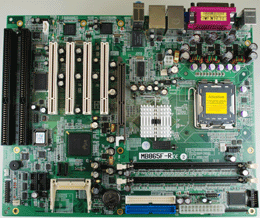
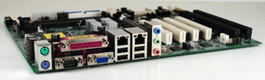
|
Socket LGA775 WITH ISA & PCI Slots!
MB-865F Industrial ATX Motherboard
for LGA775 Intel® Pentium IV & Celeron D CPUs Up to 3.8 GHz
- Supports Socket LGA775 Pentium IV & Celeron D CPUs (90 nm only)
- Intel 865G Chipset
- 800/533MHz Front Side Bus
- Two DDR memory slots, Up to 2 GB RAM
- Incorporates on-board video, Dual LAN (0ne 10/100 and one Gigabit),
Audio
- AGP slot
- 4-USB ports (2.0) (pin-header for two ports)
- 4-PCI & 2-ISA Slots
- 3-RS-232, 1-RS-232/422/485, 1-LPT, 2-SATA
|
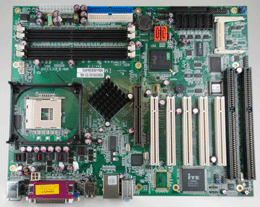
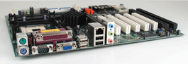
|
ISA-Slots ATX Motherboard, Socket 478
MB-8650 Industrial ATX Long Life Motherboard for Pentium IV
- Socket 478 for Pentium IV & Celeron
- Intel® 865G chipset
- Fast 533/800 MHz front side bus
- Four DDR memory slots
- 8X AGP slot
- On-board Gigabit LAN & audio, IDE & SATA
- 8-USB 2.0 ports (4 by pin header)
- 5-PCI & 2-ISA slots (one shared)
|
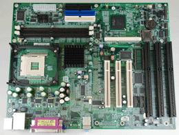
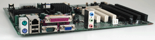
|
ISA-Slots ATX Motherboard, Socket 478
MB-800V Industrial Long Life Motherboard for Pentium IV, 3-ISA Slots,
3-PCI Slots, On-Board Video, LAN & Audio
- Socket 478 for Pentium IV & Celeron
- 533 MHz front side bus
- Two DDR memory slots
- Incorporates on-board video, LAN, audio
- 4-USB ports (2.0)
- 3-PCI & 3-ISA Slots
|
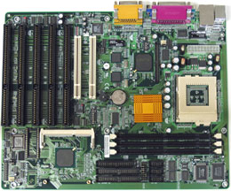
|
MB-700 Industrial ATX Motherboard for Pentium III
(Note: This board has been discontinued, but alternative solutions may be
available)
|
|
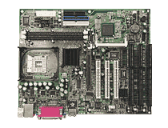
|
- Socket 478 ISA Motherboard support P4 up to 3.06GHz+
- Integrated Intel 845G/GL Chipset support 400MHz/533MHz FSB
- 2 DDR memory sockets support PC200/PC266 memory modules up to 2 GB
- ICH4 integrated audio & Intel 845G/GL integrated VGA
- ICH4 10/100 Mbps Ethernet (optional Gigabit Ethernet solution)
- 2 IDE interface support UDMA 33/66/100
- 1 FDD, 4 COM (3xRS232 & 1xRS232/422/485), 1 Parallel, 1 IrDA
- 4 USB (USB 1.1 and 2.0 compliant), PS/2 Mouse & PS/2 Keyboard
- 1 AGP, 3 PCI, 3 ISA, 1 MicroPCI
- 256-level Watchdog Timer, Digital I/O & Hardware Monitoring
- Supports M-system DiskOnChip 2MB~288MB & MicroPCI
|
= MB880 (iBase)
|
- Supports LGA775 Pentium®4 processors
- Up to 3.8GHz, 533/800MHz FSB
- DDR DIMM x 2, max. 2GB
- Two PCI Express Gigabit LAN with RJ-45 on board
- Watchdog timer, Digital I/O, PCI to ISA Bridge
- 4 Serial ATA, 6 USB, 4 serial ports, DiskOnChip
- 1 PCI Express x16, 1 PCI Express x1, 3 x PCI, 2 ISA slots
|
|
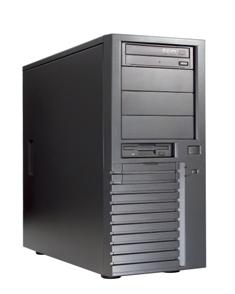
|
Industrie Rechner mit
ISA Slot, Computer ISA, PC ISA, Computer mit ISA
|
IM-P4LA Sockel 775 1xISA - 4xPCI - 1xPCI-EX x16, x4, x1
- ATX Motherboard
- Socket LGA 775 for Intel Pentium D / ; Pentium 4 / Celeron D
- FSB 533 / 800 / 1066 MHz
- Intel 945G & ICH7R Chipset
- Onboard VGA , Gigabit LAN , HD Audio , SATA II
- 6xCOM, 6xUSB2.0, SPDIF, 8-bit GPIO, LPT, IrDA
- C ompactFalsh and DOC Socket
-
PCI-Express x16
/ x4 / x1, ; 4 PCI and 1 ISA
|
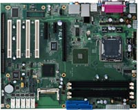
= P4lA (Commell)
|
|
IM-ADE9021 ; 2xISA - 4xPCI
|
- Intel® Pentium® 4 / Celeron® D Processor in an LGA775
Socket
- Intel® 915GV Chipset, 800/533 MHz FSB
- Dual-channel DDR2 Memory Architecture
- Integrated Intel® GMA 900 graphics
- Four SATA 150 Devices
- Dual 10/100/1000Base-T Ethernet
- Four COM Ports, Eight USB 2.0 Ports
- Four PCI, Two ISA Slots
|
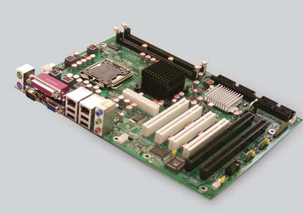
|
|
MB-i965Q Sockel 775 2xISA - 4xPCI-1xPCIe
|
- 1-2Stk - 225,00€ zzgl. MwSt.
- Support Intel Core™ 2 Duo Desktop/Pentium D/Pentium 4/Celeron
D
- Processor in the LGA775 Package
- Support DDRII 533/667MHz SDRAM up to 4GB
- Intel Q965 + Intel ICH8R Chipset
- Support Dual Display
-
Support 4 x SATAII, 10 x USB 2.0 Ports, 8 bit GPIO
-
Dual Gb LAN
-
Support 5 x PCI, 1 x ISA, PCIe x16 for Graphics
- Support TPM 1.2, Watchdog Timer & Hardware Monitoring Function
|
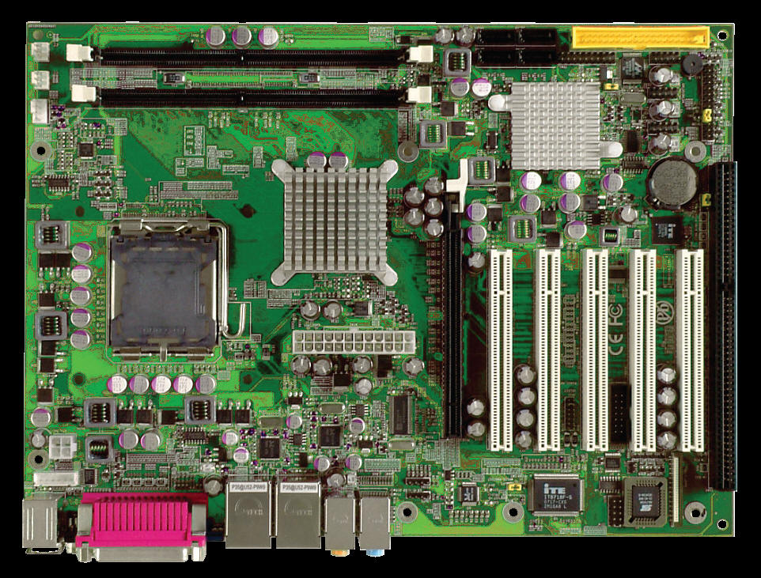
|
|
IM-i7412 ; ; Sockel 478 ; 1xISA - 5xPCI - 1xAGP ;
;
|
- ATX Motherboard
- Prozessor Sockel 478 bis 3,0GHz
- Bus Takt FSB 800/533
- Chipsatz Intel 865G
- Bios Award Flash
- 4 x 184pin Dimm Sockel bis zu 2GB DDR-RAM
- 2x IDE Schnittstellen, UDMA 33/66/100
- 2x SATA
- 1x Parallel Port SPP/EPP/ECP - 2 serielle RS-232
- PS/2 Tastatur und Maus
- 6 xUSB 2.0
- 1 x ISA, 5x PCI, 1xAGP
- VGA Intel 865G shared memory
- LAN Intel 82562 10/100 ; Base-TX Ethernet, RJ 45
- Betriebstemperatur 0-60°C
|
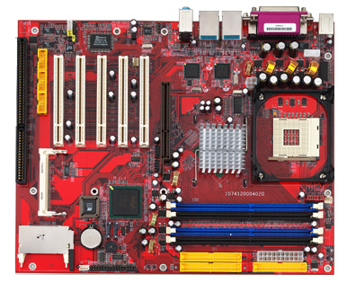
|
|
IM-4GVI83 ; 3xISA - 4xPCI - 1xADD
|
- ATX Motherboard
- Prozessor Sockel 478 (Northwood, Prescott bis 2,8GHz)
- Bus Takt 400/533 MHz
- Chipsatz Intel 845GV / ICH4
- Bios Award Flash
- 2x 184pin Dimm Sockel bis zu 2GB DDR-RAM
- 2 PCI EIDE Schnittstellen, UDMA 33/66/100
- Winbond W83627HF - 1 parallel Port SPP/EPP/ECP - 2 serielle RS-232
- PS/2 Tastatur und Maus
- 4 USB 2.0
- 3x ISA, 4x PCI, 1xAGP (for ADD-card)
- ITE 8888 PCI-ISA bridge ;
- VGA Intel 845GV max 64MB shared memory, CRT
- LAN Intel 82541 10/100 Base-TX Ethernet, RJ 45
- Betriebstemperatur 0-60°C
|
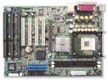
= IP-4GVI20 (Ipox)
|
|
IM-4PCI2E ; ab Lager lieferbar ; 2
xISA - 2xPCI-X - 2xPCI - 1xAGP ;
|
; 1-2Stk - 220,00 € zzgl. MwSt. ab 3Stk ;auf Anfrage
- Format: ; ATX
- ProzessorenIntel® Pentium® 4 / Celeron™
- Prozessor-Sockel Sockel 478
- Bus-Takt 533/800 MHz
- Chipsatz Intel® 875P
- BIOS AWARD® Bios
- Systemspeicher4 x 184 Pin DIMM Sockelunterstützt bis zu 4GB
DDR-SDRAM (333/400), ECC
- On-Board IDE2 PCI EIDE Schnittstellen, UDMA 33/66/1002 S-ATA
Schnittstellen, 150MB/s
- On-Board FDD unterstützt bis zu 2 Floppylaufwerke
- On-Board Multi- I/O Winbond W83627HF1 parallele SPP/EPP/ECP
Schnittstelle2 serielle RS-232 Schnittstellen
- On-Board SSDSockel für CompactFlash™ Typ II
- Tastaturanschluss PS/2 und 6-pin Stiftleiste, shared
- Mausanschluss PS/2 und 6-pin Stiftleiste, shared
- USB4 Anschlüsse, USB 2.0
- Watch Dog Timer 256 Stufen
- Erweiterungsslots 2 x ISA, 2 x PCI, 2 x PCI-X, 1 x AGP8x
- Unterstützt Hyperthreading
- LAN Intel® 82547GI, 10/100/1000 MBit, RJ-45
- On-Board AudioAC97 Audio codec
- Betriebstemperatur 0°C ~ 60°CLagertemperatur-20°C ~
80°CRelative Luftfeuchtigkeit10% - 90%, nicht kondensierend
- Abmessungen 305mm x 245mm ;
|
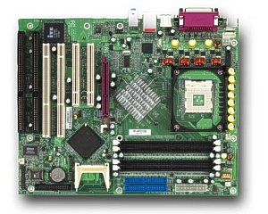
|
IM-3ETI23 Sockel 370 ; 3xISA - 4xPCI - 1xAGP ;
1-2Stk - 209,00 € zzgl. MwSt. ab 3Stk ;auf Anfrage
- Format: ATX
- Prozessoren Intel® Pentium® III, Celeron™,
Tualatin™
- Prozessor-Sockel Sockel 370, FCPGA2
- Bus-Takt 100/133 MHz
- Chipsatz Intel® 815E
- BIOS AWARD®, Flash
- Systemspeicher 2 x 168 Pin DIMM Sockel unterstützt bis zu 512MB
SD-RAM
- On-Board IDE 2 PCI EIDE Schnittstellen, UDMA 33/66/100
- On-Board FDD unterstützt bis zu 2 Floppy-Laufwerke
- On-Board Multi-I/O Winbond W8977EF 1 parallele SPP/EPP/ECP
Schnittstelle 2 serielle RS-232 Schnittstellen
- Tastatur PS/2 und 6-pin Stiftleiste shared
- Maus PS/2 und 6-pin Stiftleiste shared
- USB 4 Anschlüsse, USB1.1
- Watch Dog Timer 16 Stufen
- Erweiterungsslot 3 x ISA, 4 x PCI, 1x AGP
- Sonstiges ITE® 8888 PCI-ISA bridge
- On-Board VGA Intel® 815E
- On-Board LAN Intel® 82562, 10/100 Base-TX Ethernet, RJ-45
- On-Board Audio Realtek® ALC650 AC97 Audio
- Betriebstemperatur 0°C - 60°C
- Relative Luftfeuchtigkeit u10% - 90%, nicht kondensierend
- Abmessungen 305mm x 210mm
|
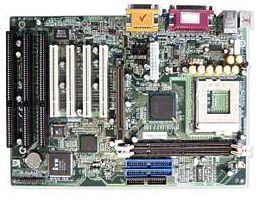
|
|
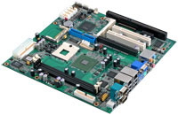
|
COMMELL PMCA
Intel Core2 Duo Micro ATX Motherboard
-
CPU : ;Intel CoreTM Duo / Core 2 Duo Merom
with Socket M @ ;533 / 677 MHz FSB.
-
Memory : ;2 ;x ;240 pin ;DDR2 ;533/677 MHz up to 3.0
GB. ;
-
Chipset : Intel® 945GME ;and ICH7M.
-
VGA Interface: ;built-in Intel®
Graphics Media Accelerator (GMA) 950. ;
-
PCI ; Enhanced IDE : ; One Ultra ATA/100 IDE channel
up to 2 ATAPI devices.
-
Serial ;ATA : 2 x Serial ATA ; Interface ; with 150
MB/s transfer rate.
-
LAN Interface : ; x Intel Gigabit LAN .
-
Audio : ; Realtek ALC880 HD Audio
-
Extended Interface: PCI-Express 16x / 1x slots , 2 x PCI and 1
x ISA slots.
-
Soild State Disk: DiskOnChip, IDE support 40-pin DOM,
CompactFlash Type-II socket. DiskOnChip socket .
-
USB : ;8 Hi-Speed USB 2.0 interface with up to 480
Mbps of data transfer rate. ;
-
I/O Ports : ;5 x RS232 & 1x RS232/422/485 ports,
;IrDA, FDD, PS/2 keyboard and mouse ports, 1 x SPDIF. 1 x LPT.
-
Digital I/O : Supports ;8-bit digital I/O. ;
- Watchdog Generates a system reset with internal timer for 1 to 255
sec. / min
|
|
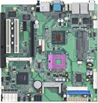
|
COMMELL PMSA
Intel Core Duo/Core Duo 2 MicroATX Motherboard
-
CPU : ;Intel® Core™ 2 Duo processor Merom
with Socket P @ 800 MHz FSB.
- Memory : ;2 ;x ;200-pin ;DDR2 ;533/667MHz up to 3.0 GB. ;
- Chipset : Intel ® GME965 ;and ICH8M.
- VGA Interface: ;built-in Intel ® extreme GMA
X3100 Technology.
-
LVDS interface: Onboard 24-bit Dual channel LVDS connector.
- One 40-pin IDE interface supports up to 2 ATAPI Devices.
- Serial ATA : 3 x Serial ATA interface with 300 MB/s transfer rate.
- LAN Interface : 2 x Intel ® 82573L Gigabit Ethernet .
-
Audio : ;Realtek ALC888 HD Audio.
-
Solid State Disk : IDE1 supports 40-pin DiskOnModule
. CompactFlash Type-II socket
-
IEEE 1394 : 2 x IEEE1394 port.
-
GPIO interface : Onobard 8-bit Digital I/O interface.
-
Extended interface : PCIE X16 & PCIE X1 , 2 x PCI
, 1 ISA and 1 Mini-PCI socket
-
Rear I/O ports : PS/2 Keyboard/Mouse, LAN, USB 2.0,
IEEE 1394, COM, VGA, Audio. SPDIF
|
|
|
COMMELL P4LA
Intel® Core 2 Duo Desktop industrial ATX Motherboard
|
|
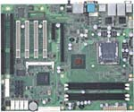
|
COMMELL P4BWA
Intel Core 2 Duo Desktop LGA775 ATX Motherboard
-
CPU : Intel® Core™2 Quad / Core™2
Duo Desktop / Pentium D with LGA775 @ 533/800/1066 MHz FSB.
-
Memory : 4 x 240-pin DDR2 533/667/800MHz up to 8.0
GB.
-
Chipset : Intel ® Q965 and ICH8DO.
-
VGA Interface: built-in Intel ®
extreme GMA 3000 technology.
-
Serial ATA : 6 x Serial ATA II interface with 300MB/s
transfer rate.Support RAID 0,1,5,10
-
LAN Interface : 2 x Intel ® 82573L Gigabit
Ethernet Controller.
-
Audio : Realtek ALC888 High Definition
Audio.
-
GPIO interface : Onboard 8-bit Digital I/O interface.
-
Extended interface : PCI-Express X16 / X4 , 1 x
Mini-PCI , 4 x PCI & 2 x ISA slots
-
I/O ports : PS/2 key/mouse , LAN ports , USB ports ,
COM , VGA , Audio , SPDIF
|
Advansus is a joint venture between Advantech and Pegatron (spun from
ASUStek).


{kind=link}
{kind=link}
{kind=link}
{kind=link}